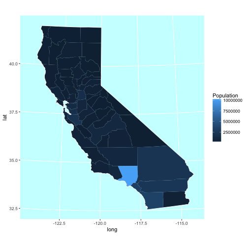

California Population, 2015 estimate
estimate based on 2010 census

California Population per Hydrologic Region
(based on 2015 estimate)

This report pulls the latest reservoir water data for California. We map the counties covered per hydrologic region as well as the reservoirs within those hydrologic regions. We also scraped the current levels per region (as of mid February).
A hydrologic region is a geographic area defined by a water basin or shed or other distinct geographic feature (like river, lake, etc).
where ○ denotes a reservoir
Grey is the percentage comparison of this years current level as it relates to the average. Black is the percentage comparision of this years current level as it relates to the total capacity of the region.
Below we look at the California population, estimated as of 2015 based on the 2010 census, per county and per hydrologic region. What we can see below is the difficulty faced by some areas for water access. Note the current capacities within the southern areas with their respective populations.
If we consider that a drought is defined as a period of time with deficient rainfall as it relates to a particular environment and demand, we see that Southern California with its normally dry environment and high demand (due to high population) is more susceptible to drought and has a more difficult climb out of a drought.
Amber O'Connell: aoconnel@ucsc.edu
UCSC CMPS 263 Winter 2017, Dr. Suresh Lodha